Teaching Linear Distributor to MTU Queue for Panther Plus
 Auto Teach Linear Distributor to MTU Queue
Auto Teach Linear Distributor to MTU Queue
- Move the Linear Distributor away from the MTU Multi-tube unit—Container used to process tests in the instrument. An MTU contains five separate reaction tubes. The MTU is moved through the instrument by the linear distributor and includes five tiplets for pipettiing to be used in the mag wash station. Queue (i.e. chiller slot 1)
- Insert the black MTU Queue Teach Tool into the MTU Queue.
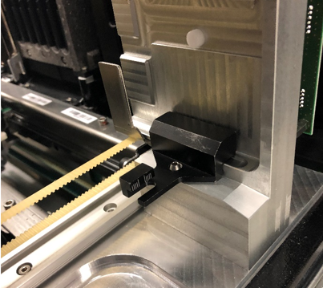
- Remove the Retention Clip on the Input Queue Teach Tool.
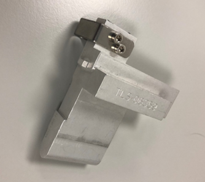
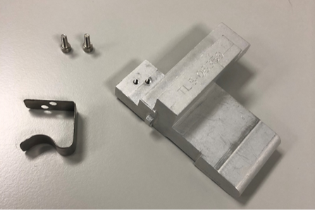
- Insert the MTU Input Queue Teach Tool into the pick position of the MTU Queue.
- Firmly push the Input Queue Teach Tool into the MTU Queue until it is firmly up against the MTU Sidecar Alignment Tool.
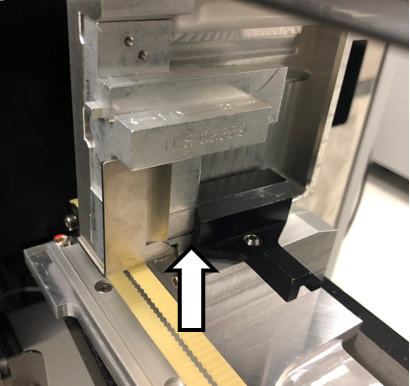
- Manually align MTU Queue such that the tab of the Teach Tool and the Hook are centered.

Note—See Using the Input Queue Autoteach Tool - Select Position Teach MTU Input Queue or Auto Teach All.
- If Auto Teach All is selected for the Linear Distributor, ensure the service drawer is fully closed and latched.
- Allow the Linear Distributor to teach to the MTU Queue.
- Remove the Teach tools once teaching is complete.
- MTU Sidecar Installation
OR
Manual Teach Linear Distributor to MTU Queue
- Open Service Software.
- Loosen the 3 screws attaching the MTU Queue to the Panther Chassis
- One screw is located at the back of the MTU Queue.
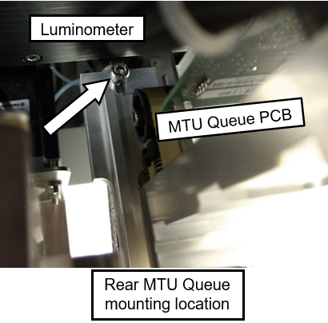
- One screw is located at the front of the MTU Queue.
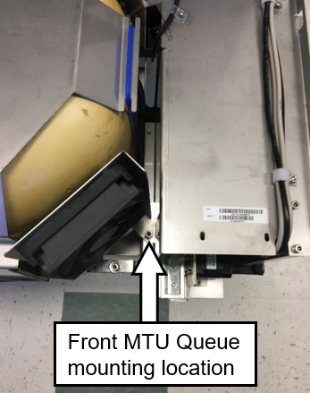
aa - One screw is located on the bottom plate of the MTU Queue
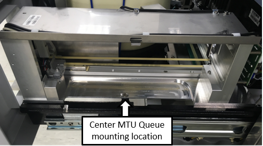
- One screw is located at the back of the MTU Queue.
- Initialize the Linear Distributor and Input Queue in Service Software.
Note—The MTU Queue is label Input Queue in Service Software. - Perform the Theta Alignment procedure.
- Insert an MTU Carrier with a minimum of 2 MTUs into the MTU Queue.
- Click on the P-Front&Loading tab in Service Software.
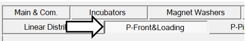
- Click Push MTU.
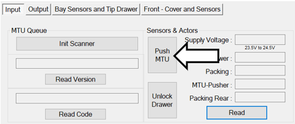
- Click on the Linear Distributor tab.
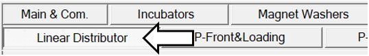
- Click on Teach.
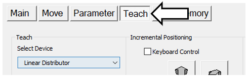
- Select Sledge in the Select Drive box.
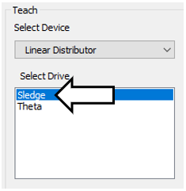
- Select the Input Queue in the Select Position box.
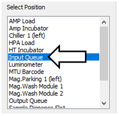
- Select Move Theta & Z & X to selected Position (!! fast move!!) in the Options for selected Device and Drive.
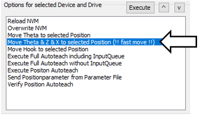
- The Linear Distributor should be in position next to the MTU Queue.
- Select Move Hook to selected Position in the Options for selected Device and Drive.
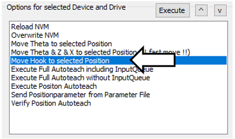
- Click Execute.
- Physically position the MTU Queue so that the tab of the MTU and the Hook are centered.
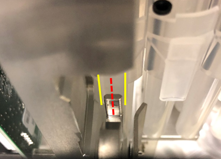
- Tighten the 3 screws securing the MTU Queue loosened in the previous Step 2.
- MTU Sidecar Installation
 button at the top of the page to send feedback, comments, or change requests.
button at the top of the page to send feedback, comments, or change requests.